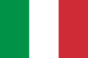
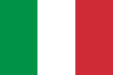
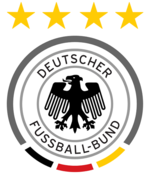

Desempenho das Seleções em Copas do Mundo
As seleções alemã, argentina, brasileira e italiana somam juntas 15 títulos em Copas do Mundo, 9 vice-campeonatos e 7 sedes de Copa do Mundo. São as 4 maiores seleções do futebol do planeta.

 

Seleção Brasileira

A seleção brasileira é penta-campeã mundial de futebol, foi vice-campeã duas vezes e foi o país sede em 2 Copas do Mundo.
- 1930: 1ª fase
- 1934: 1ª fase
- 1938: Terceiro lugar
- 1950: Vice-campeão
- 1954: Quartas de final
- 1958: Campeão
- 1962: Campeão
- 1966: 1ª fase
- 1970: Campeão
- 1974: Quarto Lugar
- 1978: Terceiro lugar
- 1982: 2ª fase
- 1986: Quartas de final
- 1990: Oitavas de final
- 1990: Oitavas de final
- 1994: Campeão
- 1998: Vice-campeão
- 2002: Campeão
- 2006: Quartas de final
- 2010: Quartas de final
- 2014: Quarto lugar
Seleção Alemã

A seleção alemã é tetra-campeã mundial de futebol, foi vice-campeã três vezes e foi o país sede em 2 Copas do Mundo.
- 1930: Não participou
- 1934: Terceiro lugar
- 1938: Oitavas-de-final
- 1950: Banido
- 1954: Campeão
- 1958: Quarto lugar
- 1962: Quartas-de-final
- 1966: Vice-campeão
- 1970: Terceiro lugar
- 1974: Campeão
- 1978: 2ª fase
- 1982: Vice-campeão
- 1986: Vice-campeão
- 1990: Campeão
- 1994: Quartas-de-final
- 1998: Quartas-de-final
- 2002: Vice-campeão
- 2006: Terceiro lugar
- 2010: Terceiro lugar
- 2014: Campeão
Seleção Italiana

A seleção italiana é tetra-campeã mundial de futebol, foi vice-campeã duas vezes e foi o país sede em 2 Copas do Mundo.
- 1930: Não participou
- 1934: Campeão
- 1938: Campeão
- 1950: 1ª fase
- 1954: 1ª fase
- 1958: Não se classificou
- 1962: 1ª fase
- 1966: 1ª fase
- 1970: Vice-campeão
- 1974: 1ª fase
- 1978: 2ª fase
- 1982: Campeão
- 1986: Oitavas-de-final
- 1990: Terceiro lugar
- 1994: Vice-campeão
- 1998: Quartas-de-final
- 2002: Oitavas-de-final
- 2006: Campeão
- 2010: 1ª fase
- 2014: 1ª fase
Seleção Argentina

A seleção argentina é bi-campeã mundial de futebol, foi vice-campeã duas vezes e foi o país sede em 1 Copa do Mundo.
- 1930: Vice-campeão
- 1934: 1ª fase
- 1938: Não participou
- 1950: Não participou
- 1954: Não participou
- 1958: 1ª fase
- 1962: 1ª fase
- 1966: Quartas-de-final
- 1970: Não se classificou
- 1974: 2ª fase
- 1978: Campeã
- 1982: 2ª fase
- 1986: Campeã
- 1990: Vice-campeão
- 1994: Oitavas-de-final
- 1998: Quartas-de-final
- 2002: 1ª fase
- 2006: Quartas-de-final
- 2010: Quartas-de-final
- 2014: Vice-campeão